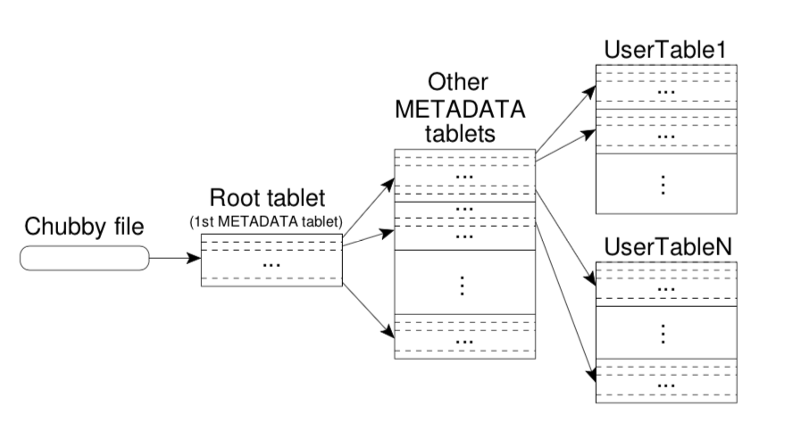

Abstract
- Bigtable is a distributed storage system for managing structured data that is designed to scale to a very large size
Data Model
A Bigtable is a sparse, distributed, persistent multi- dimensional sorted map. The map is indexed by a row key, column key, and a timestamp; each value in the map is an uninterpreted array of bytes.
(row:string, column:string, time:int64) → string
Rows
- The row keys in a table are arbitrary strings
- Every read or write of data under a single row key is atomic
- makes it easier for concurrent updates to the same row.
- The row range for a table is dynamically partitioned. Each row range is called a tablet, which is the unit of dis- tribution and load balancing
Column Families
- Column keys are grouped into sets called column fami- lies, which form the basic unit of access control
- All data stored in a column family is usually of the same type
- A column family must be created before data can be stored under any column key in that family; after a family has been created, any column key within the family can be used
Timestamps
- Each cell in a Bigtable can contain multiple versions of the same data; these versions are indexed by timestamp
API
- The Bigtable API provides functions for creating and deleting tables and column families. It also provides functions for changing cluster, table, and column family metadata, such as access control rights.
- Bigtable can be used with MapReduce, a framework for running large-scale parallel computations de- veloped at Google. We have written a set of wrappers that allow a Bigtable to be used both as an input source and as an output target for MapReduce jobs.
Building Blocks
- Bigtable is built on several other pieces of Google infrastructure. Bigtable uses the distributed Google File System (GFS) to store log and data files. A Bigtable cluster typically operates in a shared pool of machines that run a wide variety of other distributed applications, and Bigtable processes often share the same machines with processes from other applications. Bigtable de- pends on a cluster management system for scheduling jobs, managing resources on shared machines, dealing with machine failures, and monitoring machine status.
- The Google SSTable file format is used internally to store Bigtable data
- Bigtable relies on a highly-available and persistent distributed lock service called Chubby
Implementation
The Bigtable implementation has three major compo- nents: - a library that is linked into every client - one master server - many tablet servers
A Bigtable cluster stores a number of tables. Each table consists of a set of tablets, and each tablet contains all data associated with a row range. Initially, each table consists of just one tablet. As a table grows, it is auto- matically split into multiple tablets, each approximately 100-200 MB in size by default.
Tablet Location
- We use a three-level hierarchy analogous to that of a B+- tree to store tablet location information 
Tablet Assignment
Each tablet is assigned to one tablet server at a time - The master keeps track of the set of live tablet servers - Bigtable uses Chubby to keep track of tablet servers - The master is responsible for detecting when a tablet server is no longer serving its tablets, and for reassigning those tablets as soon as possible - When a master is started by the cluster management system, it needs to discover the current tablet assign- ments before it can change them
Tablet Serving
- Updates are committed to a commit log that stores redo records
- the recently committed ones are stored in memory in a sorted buffer called a memtable
- the older updates are stored in a sequence of SSTables
- To recover a tablet, a tablet server reads its metadata from the METADATA table. This meta- data contains the list of SSTables that comprise a tablet and a set of a redo points, which are pointers into any commit logs that may contain data for the tablet

Refinements
- Locality groups
- Clients can group multiple column families together into a locality group
- Compression
- Clients can control whether or not the SSTables for a locality group are compressed, and if so, which compression format is used
- Caching for read performance
- To improve read performance, tablet servers use two levels of caching. The Scan Cache is a higher-level cache that caches the key-value pairs returned by the SSTable interface to the tablet server code. The Block Cache is a lower-level cache that caches SSTables blocks that were read from GFS
- Bloom filters
- a read operation has to read from all SSTables that make up the state of a tablet
- Commit-log implementation
- we append mutations to a single commit log per tablet server, co-mingling mutations for different tablets in the same physical log file
- Speeding up tablet recovery
- If the master moves a tablet from one tablet server to another, the source tablet server first does a minor compaction on that tablet
- Exploiting immutability
- Besides the SSTable caches, various other parts of the Bigtable system have been simplified by the fact that all of the SSTables that we generate are immutable
Lesson
- large distributed sys- tems are vulnerable to many types of failures, not just the standard network partitions and fail-stop failures as- sumed in many distributed protocols
- it is important to delay adding new features until it is clear how the new features will be used
- the importance of proper system-level monitoring
- The most important lesson we learned is the value of simple designs